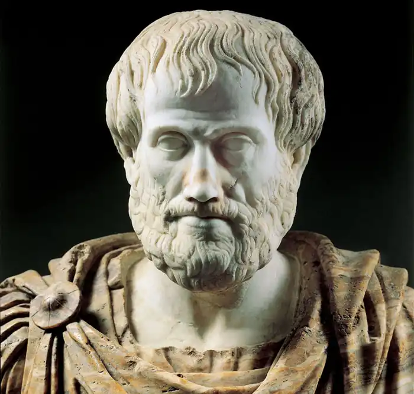

Батько — придворний лікар македонського царя; дитячі роки Аристотель імовірно провів у царській резиденції в Пеллі. У 15-річному віці лишився сиротою, під опікою Проксена з Атарнеї. 367 до н. е. відправлений опікуном до м. Афін для продовження навчання. Вступив до Академії Платона, якій присвятив 20 років (367—347 до н. е.) — як слухач, викладач і член філософської співдружності. Був одружений на племінниці Гермія, тирана Атарнеї; мав двох дітей (син Нікомах загинув на війні в молодому віці). Після смерті Платона (347 до н.е.) полишив м. Афіни, кілька років провів у мандрах; жив у Малій Азії (в полісах Троада, Ассос) і на острові Лесбос (Мітілена).
343—340 до н. е. на запрошення царя Філіппа ІІ був наставником Александра Македонського.
335 до н. е. повернувся до м. Афін, де заснував філософську школу — Лікей (Ліцей, назва походить від розташування школи у священному гаю, неподалік від храму Аполлона Лікейського). Учнів школи і послідовників Аристотеля назвали "перипатетики" (буквально "ходити довкола, походжати" — за традиціями Лікею, філософії навчалися під час неквапних прогулянок). Після смерті Александра та перемоги антимакедонської партії був вимушений залишити м. Афіни (323 до н.е.), рятуючись від звинувачень у неповазі до традиційних богів. Залишаючи поліс, передав свої праці учню Теофрасту з Мітілени. Останні роки прожив у маєтку матері в Халкіді; помер на острові Евбея. Дійшли згадки, що тіло філософа було повернене на батьківщину. Понад століття архіви Аристотеля перебували у підземному сховищі (згодом копії передано до Александрійського музею). У 1 ст. до н. е. вивезені Луцієм Корнелієм Суллою до м. Рима, де упорядковані Андроніком Родоським. Лікей Аристотеля проіснував до 3 ст. н. е. У 2016 грецькі археологи (Костас Сісманідіс) повідомили про віднайдення неподалік м. Стагіри великої гробниці з вівтарем, імовірного поховання Аристотеля.